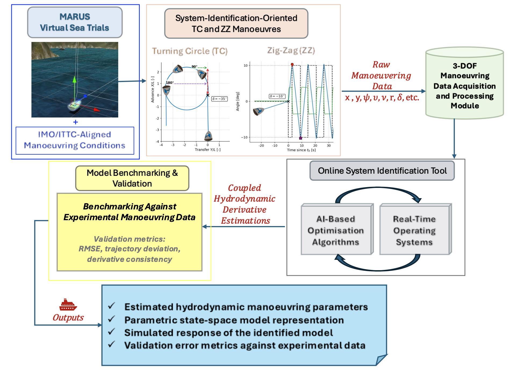

PhD Research Project • Started February 2026
DOSITA investigates AI-enabled, physics-informed, and simulation-driven methods for online identification of ship manoeuvring dynamics in autonomous marine vessels.
DOSITA is a PhD research project focused on the development of an open-source, AI-enabled online system identification framework for autonomous marine vessels, particularly Unmanned Surface Vessels (USVs).
The project centres on the real-time estimation of coupled hydrodynamic derivatives using data-driven methodologies embedded within the high-fidelity simulation environment of MARUS (Marine Robotics Unity Simulator).
Maritime decarbonisation and sustainable autonomy require models that are both accurate and adaptable. Existing manoeuvring identification workflows often depend on labour-intensive, costly, or offline approaches. DOSITA explores whether simulation-driven, physics-informed, and AI-enhanced identification can deliver more efficient, robust, and interpretable models.
How can a data-driven online identification framework enable real-time estimation of coupled hydrodynamic derivatives in nonlinear ship manoeuvring models?
How can AI-enabled machine learning optimisation improve the accuracy, robustness, and physical consistency of online nonlinear manoeuvring model identification?
How can integration with a high-fidelity simulation and digital-twin framework such as MARUS accelerate the development, validation, and deployment of intelligent maritime systems?
What is the trade-off between real-time simulation execution and the reliability of hydrodynamic derivative estimation during validation and benchmarking?
The DOSITA workflow links MARUS-based manoeuvre generation, preprocessing, identification, optimisation, and benchmarking into a reproducible research pipeline.

DOSITA builds on an MSc precursor study carried out as part of the dissertation “Data-Driven Estimation of Ship Manoeuvring Hydrodynamic Derivatives using a Hybrid MARUS–PINN Framework with LLM-Guided Symbolic Discovery.”
That proof of concept explored how MARUS-generated manoeuvring data, Physics-Informed Neural Networks (PINNs), and LLM-guided symbolic discovery could be combined to estimate hydrodynamic derivatives with improved robustness, interpretability, and data efficiency.
DOSITA extends that foundation toward online identification, real-time model updating, benchmarked validation, and a more structured open research framework.
Paria Rezayan
PhD Researcher in Marine Robotics and Autonomous Systems
Sheffield Hallam University
Email: P.Rezayan@shu.ac.uk